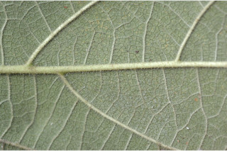
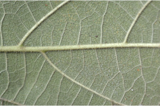

Deciduous trees, up to 18 m tall.
18 ಮೀ. ಎತ್ತರದವರೆಗಿನ ಎಲೆಉದುರು ಮಾದರಿಯ ಮರಗಳು.
Deciduous trees, up to 18 m tall.
இலையுதிர் மரம், 18 மீ. உயரம் வரை வளரக்கூடியது.
Bark pale, greenish, lenticellate.
ತೊಗಟೆ ತೆಳು ಹಸಿರು ಬಣ್ಣದಲ್ಲಿದ್ದು ಸೂಕ್ಷ್ಮ ವಾಯು ವಿನಿಮಯ ಬೆಂಡು ರಂಧ್ರಗಳ ಸಮೇತವಿರುತ್ತದೆ.
Bark pale, greenish, lenticellate.
மரத்தின் பட்டை வெளிறிய, பச்சை நிறமானது, பட்டைத்துளைகள் (லெண்டிசெல்லேட்) உடையது.
Young branchlets terete, with stout white scabrid hairs.
ಕಿರುಕೊಂಬೆಗಳು ದುಂಡಾಗಿದ್ದು ಧೃಢವಾದ ಬಿಳಿ ಬಣ್ಣದ ಒರಟು ರೋಮಗಳಿಂದ ಕೂಡಿರುತ್ತವೆ..
Young branchlets terete, with stout white scabrid hairs.
சிறியநுனிக்கிளைகள் குறுக்குவெட்டுத் தோற்றத்தில் வளையமானது, தடித்த வெள்ளை நிறமான சொரசொரப்பான உரோமங்களுடையது.
Latex watery, profuse.
ಜಿನುಗು ದ್ರವ ಜಲರೂಪಿಯಾಗಿದ್ದು ವಿಫುಲವಾಗಿರುತ್ತದೆ.
Latex watery, profuse.
தண்ணீர் போன்ற சாறு வெட்டுபட்ட பட்டையிலிருந்து அதிகளவு சுரக்கிறது
Leaves simple, alternate, spiral; stipule in pairs, lateral, caducous and leaving scar; petiole 1-6 cm long, canaliculate, with stout white scabrid hairs; lamina 5.5-17 x 3-7.5 cm, broadly elliptic to obovate, apex abruptly acuminate, base rounded or acute-cuneate; margin denticulate or sinuate to crenate (rarely lobed), scabrid on both surface, coriaceous; 3-nerved at base; midrib slightly raised above; secondary_nerves 3-6 pairs, prominent; tertiary_nerves broadly percurrent.
ಎಲೆಗಳು ಸರಳವಾಗಿದ್ದುಪರ್ಯಾಯ ಮತ್ತು ಸುತ್ತು ಜೋಡನಾ ವ್ಯವಸ್ಥೆಯಲ್ಲಿರುತ್ತವೆ; ಕಾವಿನೆಲೆಗಳು ಜೋಡಿಯಾಗಿರುತ್ತವೆ ಮತ್ತು ಪಾರ್ಶ್ವದಲ್ಲಿರುತ್ತವೆ ಮತ್ತು ವಲಯಾಕಾರದ ಗುರುತುಗಳನ್ನುಳಿಸಿ ಉದುರಿ ಹೋಗುತ್ತವೆ;ತೊಟ್ಟುಗಳು 1 – 6 ಸೆಂ.ಮೀ. ಉದ್ದ ಹೊಂದಿದ್ದು ಕಾಲುವೆ ಗೆರೆ ಸಮೇತವಾಗಿರುತ್ತವೆ ಮತ್ತು ಧೃಢವಾದ ಬಿಳಿ ಬಣ್ಣದ ಒರಟು ರೋಮಗಳಿಂದ ಕೂಡಿರುತ್ತವೆ;ಪತ್ರಗಳು 5.5– 17 X 3 – 7.5 ಸೆಂ.ಮೀ. ಗಾತ್ರವಿದ್ದು ವಿಶಾಲ ಅಂಡವೃತ್ತದಿಂದ ಬುಗುರಿಯವರೆಗಿನ ಆಕಾರ ಹೊಂದಿದ್ದು, ಥಟ್ಟನೆ ಕ್ರಮೇಣ ಚೂಪಾಗುವ ತುದಿ, ದುಂಡಾದ ಅಥವಾ ಚೂಪು –ಬೆಣೆಯಾಕಾರದ ಬುಡ, ದಂತಿತವಾದ ಅಥವಾ ವಂಕಿ ಏಣಿನ ರೀತಿಯಿಂದ ಹಿಡಿದು ದುಂಡೇಣಿನ ಮಾದರಿಯ ಅಂಚು ಹೊಂದಿರುತ್ತವೆ(ಅಪರೂಪವಾಗಿ ಹಾಲೆಯುಕ್ತವಾಗಿರುತ್ತವೆ),ಪತ್ರಗಳ ೆರಡೂ ಬದಿಗಳು ಒರಟು ರೋಮಗಳಿಂದ ಕೂಡಿರುತ್ತವೆ,ಪತ್ರಗಳ ಮೇಲ್ಮೈ ತೊಗಲನ್ನೋಲುವ ಮಾದರಿಯಲ್ಲಿರುತ್ತವೆ,ಪತ್ರಗಳ ಬುಡದಲ್ಲಿ 3 ಆಧಾರ ನಾಳಗಳಿರುತ್ತವೆ; ಮಧ್ಯ ನಾಳ ಮೇಲ್ಭಾಗದಲ್ಲಿ ಕೊಂಚ ಮೇಲೆದ್ದಿರುತ್ತದೆ; ಎರಡನೇ ದರ್ಜೆಯ ನಾಳಗಳು 3- 6 ಜೋಡಿಗಳಿದ್ದು ಪ್ರಮುಖವಾಗಿರುತ್ತವೆ;ಮೂರನೇ ದರ್ಜೆಯ ನಾಳಗಳು ವಿಶಾಲ ಜಾಲ ಬಂಧ ನಾಳ ವಿನ್ಯಾಸದಲ್ಲಿದ್ದು ಎಲೆದಿಂಡಿಗೆ ಅಡ್ಡವಾಗಿ ಕೂಡುತ್ತವೆ.
Leaves simple, alternate, spiral; stipule in pairs, lateral, caducous and leaving scar; petiole 1-6 cm long, canaliculate, with stout white scabrid hairs; lamina 5.5-17 x 3-7.5 cm, broadly elliptic to obovate, apex abruptly acuminate, base rounded or acute-cuneate; margin denticulate or sinuate to crenate (rarely lobed), scabrid on both surface, coriaceous; 3-nerved at base; midrib slightly raised above; secondary_nerves 3-6 pairs, prominent; tertiary_nerves broadly percurrent.
இலைகள் தனித்தவை, மாற்றுஅடுக்கமானவை, சுழல் போன்று அமைந்தவை; இலையடிச்செதில் ஒர் ஜோடி, பக்கவாட்டில் காணப்படுபவை, எளிதில் உதிரக்கூடியவை மற்றும் தழும்புகளை ஏற்படுத்தவல்லது; இலைக்காம்பு 1-6 செ.மீ. நீளமானது, குறுக்குவெட்டுத் தோற்றத்தில் கேனாலிகுலேட், தடித்தவை வெள்ளை நிறமான சொரசொரப்பான உரோமங்களுடையது; இலை அலகு 5.5-17 x 3-7.5 செ.மீ., அகன்ற நீள்வட்ட வடிவானது முதல் தலைகீழ் முட்டை வடிவானது, அலகின் நுனி சிறிய அதிக்கூரியது, அலகின் தளம் வட்டமானது அல்லது கூரியது-ஆப்பு வடிவானது; அலகின் விளிம்பு பற்களுடையது அல்லது பிளவுகளுடையது முதல் பிறை போன்ற பற்களுடையது (அரிதாக பிளவுகளுடையது), அலகின் மேற்பரப்பு மற்றும் கீழ்பரப்பு சொரசொரப்பானது, கோரியேசியஸ்; 3- நரம்புகளை தளத்திலே உடையது; மையநரம்பு மேற்புறத்தில் அலகின் பரப்பைவிட சிறிது உயர்ந்து இருக்கும்; இரண்டாம் நிலை நரம்புகள் 3-6 ஜோடிகள், தெளிவானது; மூன்றாம் நிலை நரம்புகள் அகன்ற பெர்க்கரண்ட்.
Inflorescence syconia, axillary, solitary, scabrid; flowers unisexual; peduncle to 1.5 cm.
ಪುಷ್ಪಮಂಜರಿಗಳು ಸೈಕೋನಿಯ ರೀತಿಯವುಗಳಾಗಿದ್ದುಅಕ್ಷಾಕಂಕುಳಿನಲ್ಲಿ ಒಂಟಿಯಾಗಿರುತ್ತವೆ ಮತ್ತು ಒರಟು ರೋಮಗಳಿಂದ ಕೂಡಿರುತ್ತವೆ;ಹೂಗಳು ಏಕ ಲಿಂಗಿಗಳು;ಪುಷ್ಪಮಂಜರಿ ವೃಂತ 1.5 ಸೆಂ.ಮೀ.ವರೆಗಿನ ಉದ್ದವನ್ನು ಹೊಂದಿರುತ್ತದೆ.
Inflorescence syconia, axillary, solitary, scabrid; flowers unisexual; peduncle to 1.5 cm.
மஞ்சரி சைகோனியம், இலைக்கோணங்களில் காணப்படுபவை, தனித்தவை, சொரசொரப்பானது; மலர்கள் ஓர் பாலானவை; மஞ்சரிக்காம்பு 1.5 செ.மீ.
Syconium, obovoid, up to 1.5 cm long, yellow or purple when ripe; achene oblong.
ಸೈಕೋನಿಯ (ಸಂಯುಕ್ತ ಫಲ) ಬುಗುರಿ ಆಕಾರದಲ್ಲಿದ್ದು 1.5 ಸೆಂ.ಮೀ.ವರೆಗಿನ ಉದ್ದ ಹೊಂದಿರುತ್ತವೆ,ಕಳೆತಾಗ ಹಳದಿ ಅಥವಾ ಕೆನ್ನೀಲಿ ಬಣ್ಣದಲ್ಲಿರುತ್ತವೆ ;ಅಖೀನುಗಳು ಚತುರಸ್ರದ ಆಕಾರವನ್ನು ಹೊಂದಿರುತ್ತವೆ.
Syconium, obovoid, up to 1.5 cm long, yellow or purple when ripe; achene oblong.
சைகோனியம், தலைகீழ் முட்டை வடிவம், 1.5 செ.மீ. நீளமானது, கனியும் போது மஞ்சள் நிறமானவை அல்லது பர்புள்; சிற்றுலர்கனி (அக்கீன்) நீள்சதுர வடிவானது.


 
